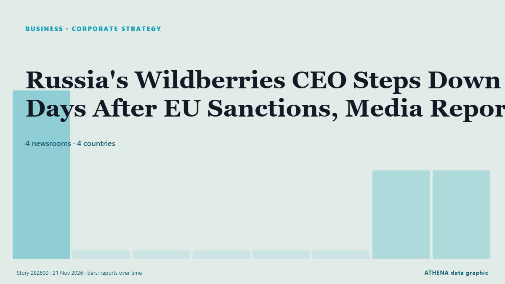

Entreprises et investissement
SponsoriséPrésenté par  Cybernetics and Artificial Intelligence Lab Welcome to the Cybernetics and Artificial Intelligence Laboratory, established at the Department of Business Administration of the National and Kapodistrian University of Athens. The lab is headed by Professor Dimitrios Thomakos. The lab aims to do research that can be published in top venues. Our research uses tools and methods of Artificial Intelligence, and lies in the following areas: - Forecasting - Decision making - Cyber security - Finance We are always looking forward to collaborating with exceptional students!
Cybernetics and Artificial Intelligence Lab Welcome to the Cybernetics and Artificial Intelligence Laboratory, established at the Department of Business Administration of the National and Kapodistrian University of Athens. The lab is headed by Professor Dimitrios Thomakos. The lab aims to do research that can be published in top venues. Our research uses tools and methods of Artificial Intelligence, and lies in the following areas: - Forecasting - Decision making - Cyber security - Finance We are always looking forward to collaborating with exceptional students!
Les titres sont affichés en anglais, tels que publiés.

Stratégie d'entrepriseRussia's Wildberries CEO Steps Down Days After EU Sanctions, Media Report
Nov 21 - Tatyana Kim, the head of Russia's largest online retailer Wildberries, has stepped down, Russian media reported on Saturday, days after the European Union added her to its Russia sanctions… de The Straits Times
| 8 nov. | 58 |
|---|---|
| 9 nov. | 108 |
| 10 nov. | 121 |
| 11 nov. | 102 |
| 12 nov. | 96 |
| 13 nov. | 63 |
| 14 nov. | 38 |
| 15 nov. | 36 |
| 16 nov. | 99 |
| 17 nov. | 88 |
| 18 nov. | 86 |
| 19 nov. | 81 |
| 20 nov. | 55 |
| 21 nov. | 13 |
President Ilham Aliyev: Azerbaijan-Vietnam relations are of strategic importance
"Your (Vietnam's – ed.) rapid socio-economic development is known to the whole world, and a very good investment climate is very encouraging for many companies from different parts of the world,"… de AzerNews
Japan automakers to standardize parts, materials for efficiency
Japan's automakers will standardize specifications for some vehicle materials and parts to compete with overseas rivals, the Japan Au. de Mainichi (English)
CITEX 2026 Brings Together Over 100 Iranian Technology Companies
Tehran’s CITEX 2026 exhibition is showcasing homegrown technological innovations aimed at addressing urban challenges and improving public services. de Tehran Times
Honda, Toyota recall 1.6 million vehicles over Takata airbag rupture risk
WASHINGTON: Honda and Toyota Motor said on Friday they are recalling about 1.6 million cars, trucks and SUVs over a risk that Takata airbag inflators could rupture.Honda and Toyota... de Oman Observer
Peru's President Fujimori thanks Japan for support in addressing El Niño phenomenon
The President of the Republic of Peru, Keiko Fujimori, thanked Japan's Emperor Naruhito for the Japanese people's solidarity and their support in helping Peru become better prepared for El Niño… de Andina (English)
‘GTA 6’ Raked In $3.8 Billion Sales On First Day—The Largest Entertainment Launch Ever
The video game has been on the market for less than 48 hours as of Friday. de Forbes Business
Angola’s ANPG says Exxon takes $4 billion FID on Kizomba fields, makes discovery
Exxon Mobil and its partners in Angola’s offshore Block 15 have taken a final investment decision on a $4 billion redevelopment of the Kizomba A and B fields and made a hydrocarbon discovery in an… de Club of Mozambique
Commission partially greenlights Belgium's final payment request for €1.38 billion under NextGenerationEU
European Commission Press release Brussels, 20 Nov 2026 Today, the European Commission partially greenlighted Belgium's sixth and final payment request for €1.38 billion under the Recovery and… de EU Commission competition press
Smith stepping down after almost 17 years as Britain's Davis Cup captain
LONDON: Britain’s longest-serving Davis Cup captain Leon Smith will step down after next week’s Finals in Italy, the Lawn Tennis Association confirmed on Friday. de Business Recorder
UK launches Africa investment platform in Kenya to help businesses grow and create jobs
UK Minister for Africa Kirsty McNeill announced Forge Africa, a UK-created platform backed by £40 million in investment, during a visit to Octavia Carbon’s Project Hummingbird in Gilgil. de Capital FM Kenya
ZIM Q3 Profit Surges to $830M as Freight Rates Rise 55%
Israeli containership operator ZIM Integrated Shipping Services reported a sharp increase in third-quarter 2026 earnings, driven by stronger freight rates, higher… de Maritime Professional
Palo Alto Networks buys AI startup Applied Compute for $4.5bn in stock
Palo Alto Networks has agreed to buy Applied Compute in an all-stock deal valued at $4.5bn. de The Next Web
Andrea Scrosati to Leave Fremantle Group
As Fremantle Group COO and CEO of Continental Europe, Scrosati oversaw Fremantle's international expansion into feature films and TV drama, including the acquisition of Element Pictures ('Poor… de The Hollywood Reporter
Sanofi rumoured to be eyeing high-profile Insmed takeover
Insmed’s shares spiked 20% following these rumours, while Sanofi’s stock dropped 2%, despite analysts backing the potential deal rationale. de Pharmaceutical Technology
GTA 6 breaks records as estimated sales top $2.3bn
Grand Theft Auto 6 is estimated to have become the biggest entertainment launch in history following the blockbuster video game’s debut on Thursday, after a 13-year wait. de Daily Mirror
Ghana, Norway to deepen maritime, oil and gas cooperation – Ablakwa
Ghana and Norway have agreed to strengthen cooperation in maritime activities, expand investments in the oil and gas sector and support startups, particularly those operating in the digital economy. de MyJoyOnline
Felicis leads $7.5M bet on Unsiloed AI to make enterprise documents usable by AI agents
With a team of just seven, Unsiloed AI plans to compete with tech giants and specialized startups in the crowded AI document-processing market. de TechCrunch
Portugal ranks seventh in the world for English proficiency
Portugal ranks seventh worldwide for English proficiency and knowledge, according to the EF English Proficiency Index 2026. de The Portugal News
EPFO approves systematic withdrawal plan - what it means
The SWP is intended to help members turn their retirement savings into a regular and predictable source of income while retaining ownership of the underlying corpus. de Times of India
AVEVA, PETROJET target digital twin handover to cut costly engineering project delays
AVEVA, a global leader in industrial software, and PETROJET, one of the largest engineering, procurement and construction (EPC) contractors in the Middle East and Africa, signed a Memorandum of… de Daily News Egypt
US deportees in South Sudan went hungry as guards pocketed money from relatives, families say
Deportees expelled to South Sudan face hunger and thirst while guards allegedly extort money, which is pocketed rather than used to improve conditions. de Arab News
Sandals South Coast reopens under US$250-million ‘Sandals 2.0’ upgrade
WESTERN BUREAU: Sandals Resorts International rejected a quick repair-and-reopen approach following Hurricane Melissa, opting instead for an extensive transformation of three Jamaican properties… de Jamaica Gleaner
Energean: Record liquid hydrocarbon production in Q3, net profit up 54%
Energean plc achieved record average daily oil production (liquid hydrocarbons) of 31,000 barrels in the third quarter of 2026, marking the highest level in the company’s history. de Naftemporiki (English)
US lawmakers urge curbs on China’s aerospace sector
A congressional report warns that Western aerospace ties have boosted China’s military aviation, scrutinising Airbus deals and urging the FAA not to certify Chinese aircraft for US flights. de Free Malaysia Today
UK PM urges Google to remove Russell Brand's innocence claim video
The convicted comedian and influencer insisted he is innocent in a statement read out by his wife in a video uploaded to YouTube. de Free Malaysia Today
Singapore takes ‘prosper thy neighbour’ approach to Asean energy trade: Tan See Leng
Regional electricity trade and fuel stockpiles are key areas for future development, says minister. de The Business Times
General Pants Co enters voluntary administration, putting hundreds of jobs at risk
Australian fashion chain becomes latest retailer in trouble after David Jones, Cue and Veronika Maine Get our breaking news email, free app or daily news podcast Youth fashion chain General Pants Co… de The Guardian
Lodestone Energy rules out further capital raise unless Haldon solar farm proceeds
Founder Gary Holden says the solar generation build should be self-funding after $75m IPO. de BusinessDesk
APEC live: China releases leaders' statement after its disappearance from APEC website
Media OutReach Newswire - 18 November 2026 - China is hosting the APEC summit for the third time, having previously hosted it in Shanghai and Beijing. de Slovenia Times
Sila Inks Long-Term Offtake Deal with Panasonic Energy to Power Domestic Battery Production
Sila, a leading battery technology and materials company, today announced a commercial offtake agreement with ... de Antara (English)
Target for landmine-free Zimbabwe by 2030 threatened by aid cuts
Global aid cuts threaten the target for Zimbabwe to be free by 2030 of mines planted during the 1970s liberation war, with only four percent of land remaining to be cleared, a demining charity said… de NewZimbabwe
Feds charge train robbers with stealing $22 million in sneakers, electronics
The crew would disable trains along the tracks southeast of downtown Los Angeles and sell the stolen good to retailers and other buyers. de Courthouse News